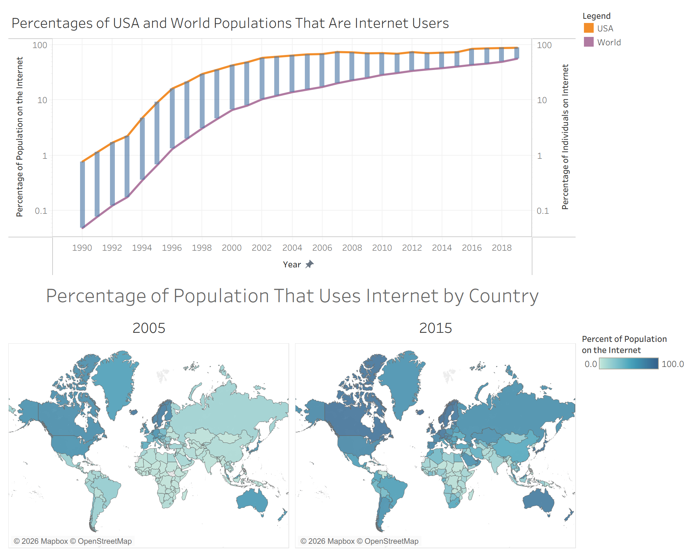
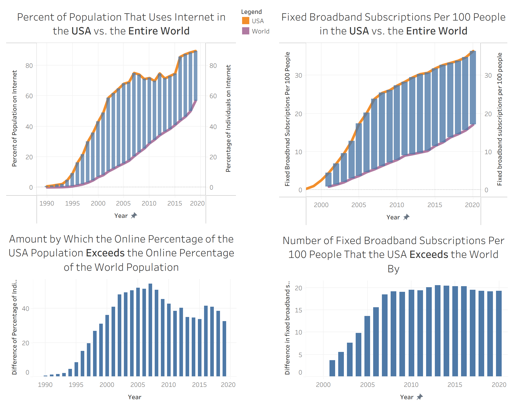

Proposition: While access to internet has historically been highly superior in the United States of America compared to other countries, the rest of the world is quickly catching up to the USA and it seems that access may soon be just as good in the rest of the world as in the United States.
FOR the Proposition

Design Decisions and Rationale:
- I decided to use a log scale for the top graph. As will be seen in the visualization in the next section, this significantly changes the way the "catching up" trend is displayed. That is, this trend is super obvious with the log scale, since essentially anything above, say, 30% is close to 100%, making it seem that the percentages for USA and the world became very close to each other at later years, where the porportion of internet users is high in both cases. In fact, I believe that the log scale decision is likely not justifiable here, and it makes this "convergence" relationship appear when it does not really exist. The statistic, which is a proportion that can be anywhere between 0% and 100% (and is not generally very close to 0% most of the time), is more naturally fit for linear scales. As a result, I believe that the earnesty/deception score of this decision is a -1.5, since it is quite deceptive, but someone who scrutinizes the axes may find the scale to be unfitting and realize.
- I also decided to include Gantts bars in the plot that "connect" the World values with the USA values in order to emphasize and draw attention to the differences between the values and how this difference changes over time. In particular, their inclusion and diminishing size emphasizes that the world's porportion of internet users is increasing at a faster rate than the USA. I believe that they are effective and work well as a way of making a relationship pop out more visually, with a potentially minor effect. I think that this choice itself is not especially deceptive, although it does introduce a bit of subjectivity and "imbalance" of attention by emphasizing the space between the lines (instead of outside the lines). Thus, I think an earnesty/deception scoer of 1 is fitting.
- For the bottom half of my visualization, I chose to use a colored map since I think that comparing two maps can potentially make interesting patterns clear. In fact, this was the case, since there were many high area countries that turned significantly darker from 2005 to 2015. That is, I was able to make it very clear how the porportion of internet users increased a lot in some countries between those two years. I do think that there is an issue with area vs. population, however. For example, many countries have disproportionately large map areas for their population, such as Canada and Russia. These were in fact countries that became significantly darker, while high population countries with less area like India did not become as much darker. This likely gave the impression that non-American countries increased their internet-using population more than they really did. This was not intentionaly deceptive, but rather just a matter of luck, and it is hard to say if the cumulative affect of these area imbalances on the viewer is significant. As a result, the earnesty/deception score that I think is most fitting is 0.5.
- In addition to using a map, I strategically chose the years 2005 and 2015. This was quite a sneaky choice, since 2005 was a year in which the USA was particularly ahead of the rest of the world, while 2015 was a year when the rest of the world had caught up a good amount to the USA. This is made more clear in the next visualization. After 2015, the USA actually seems to pull forward and gain even more internet users, however, while there seems to be a plateau (of roughly 10 years) before that. I essentially cherry-picked the two years, and I believe that this was I was especially successful in supporting the proposition. It is also quite deceptive in that these years are 10 years apart and multiples of 5, so it seems that I just chose them randomly, or maybe I felt that these were natural benchmarks to compare. I give this choice a score of -2.
AGAINST the Proposition

Design Decisions and Rationale:
- I decided to do the same thing for both data sources and split them via left/right. I think this was a good idea because it, in some ways, cuts in half the amount of thinking that the viewer needs to do in order to understand the graphs and what they show. They also show a redundant result for two difference data sources, so I hope this helps hammer the point home. I am not sure, however, if the redundancy might be seen as unnecessary or uninteresting. Overall, I think this was a good design decision, since I like the symmetry, and there is no deception involved, so I give it an earnesty/deception score of 2.
- I also chose to move the Gantts bars down into their own bar charts (so that I am plotting the differences of the statistics between the USA and the world). I did this to show that the this amount, which is intuitively the amount by which the USA has "pulled ahead" of the rest of the world, does not show a strong downward trend in recent years/decades. This can be inferred from just looking at the Gantts bars, but I do believe that this does make it more explicit. One downside may be that it does rely on the viewer reading the long title and chart axes without getting confused, which is a possibility since the quantity being plotted is not directly from the data source and it is hard to describe succintly. Since I am trying to emphasize a specific trend in the data when there may be others, it is possible that this choie isn't extremely earnest, but it definitely does not deceive nor seek to deceive, so the earnest/deception score is 1.5.
- When creating the graphs, I considered making the choice of eliminating the last (year 2019) data point for the left set of graphs (percentage of the population who are internet users). This would have made it seem even more that the world is not catching up to the USA in terms of this statistic, since 2019 saw a rather large increase for the world with just a mild increase for the USA. I did not end up making this choice since I believe the benefit in persuasiveness would be extremely small, and I wanted to keep this visualization un-deceptive. I understand that this does in fact go against the assignment's description, but I believe the trade off was worth it for me. The earnesty/deception score is 2.
Final Reflection
Overall, I believe that most of the design decisions I made fell into two pretty clear categories, one being honest choices made to highlight trends in the data and the other being choices made to make the data fit a deceiptful narrative. This is mainly because I made one visualization that was essentially fully earnest and one visualization that was mostly deceptive. The main types of deception that I used were cherry-picking and using unnecessary axes scaling. It did take some creativity and thinking to come up with ways I could deceive the viewer. In general, I felt that it was easier to come up with good-faith persuasive design choices than to come up with intentionaly deceptive design choices, since the non-deceiptful choices usually resulted from simply exploring the data, extracting truthful observations, and making these observations easy to see in appropriately designed charts. That is, to me, going into the data without seeing it before, creating honest visuals was a more straighforward task than creating deceiptful visuals.
As a result, I believe that ethical analysis and visualization is simply a result of a good-faith effort to explore all of the relevant data, observe trends, patterns, and properties, and only seek to express these relationships via visualization when they are already expressed in plots created during the exploratory phase (so that visualization would just be a way of making these relationships more clean or obvious, instead of trying to force them to appear). With enough rigor, I suspect that this approach will prevent unnatural data transformations, odd scaling choices, and cherry-picking in most cases. On the other hand, intentional cherry-picking and creating visualizations with the goal of expressing a relationship without having seen this relationship during EDA constitutes deceiptful and unethical visualization. Now, I also believe that there are some cases where nuance must be exercised. For example, it is possible that someone can approach a data analysis and visualization task with pre-existing biases or assumptions, and these biases or assumptions could cause thenm to see trends or make choices in a biased way during EDA. The resulting visualization may have been affected by this bias, or it may have not been. As a result, while I do believe that there are clear-cut cases of good-faith vs. mis-leading analysis and visualization, it is not always so easy to fit every scenario in one of these categories.